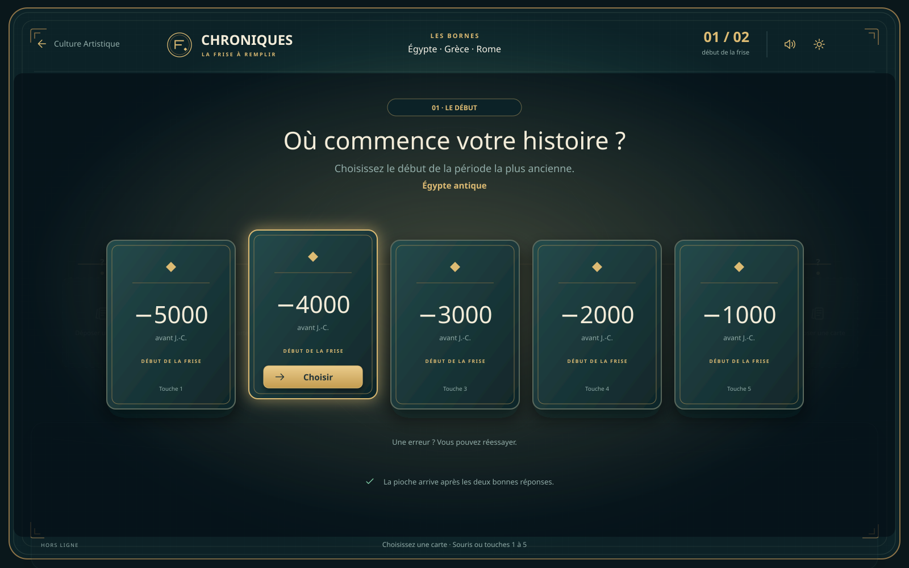
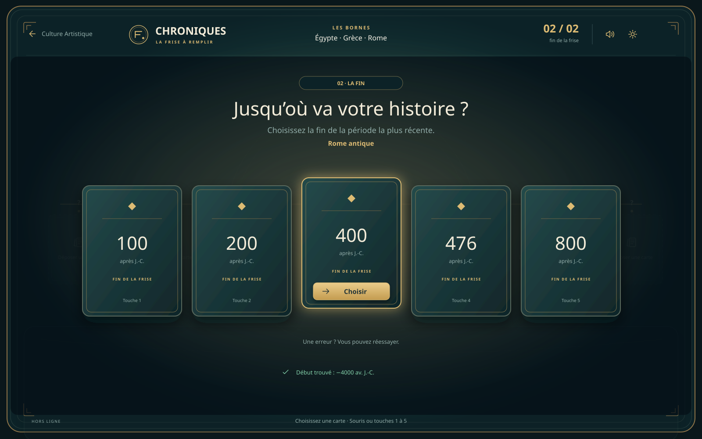
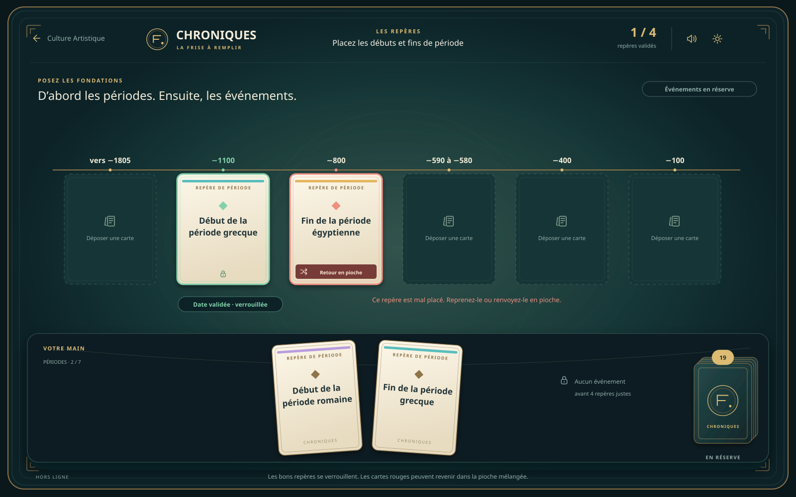
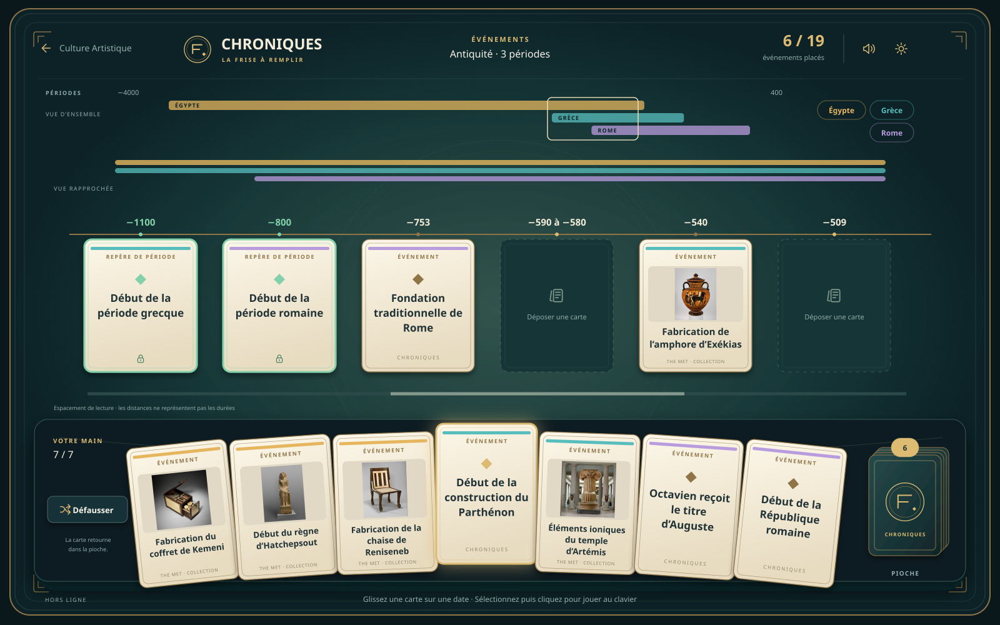
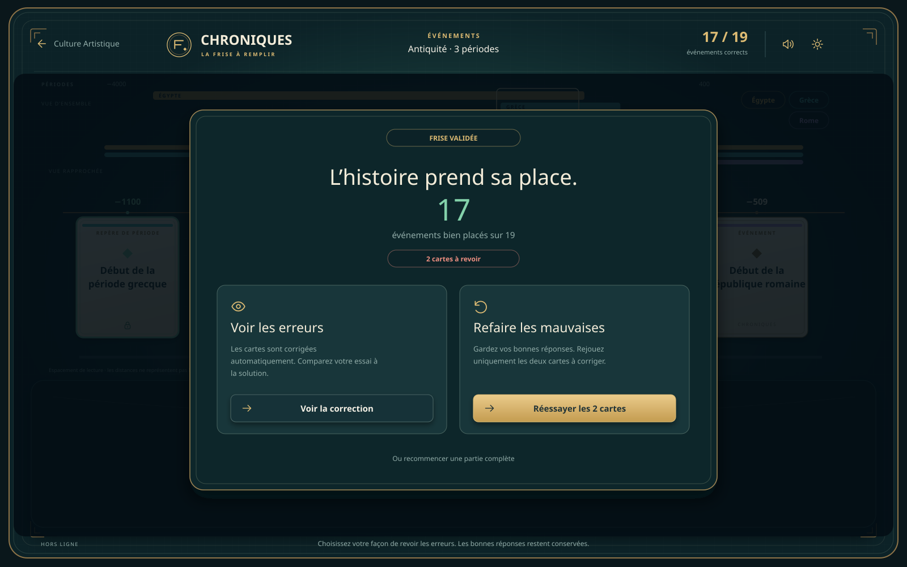
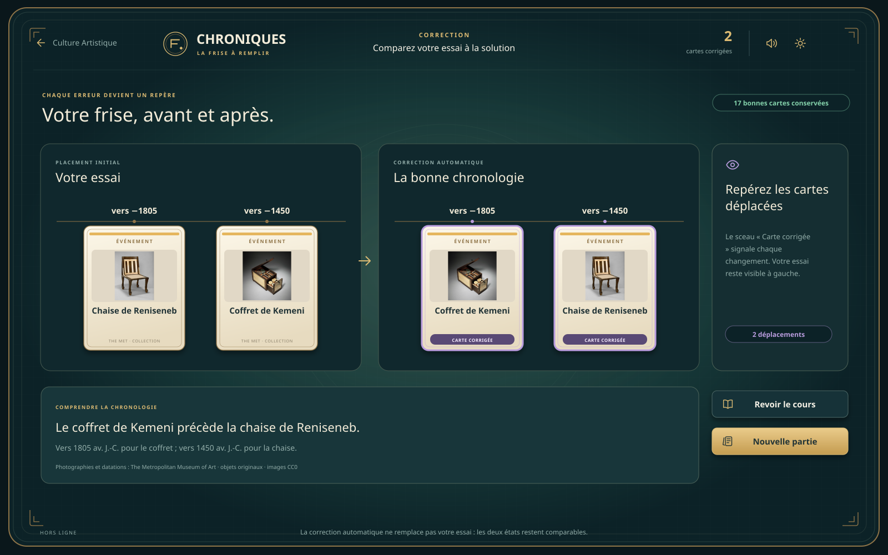
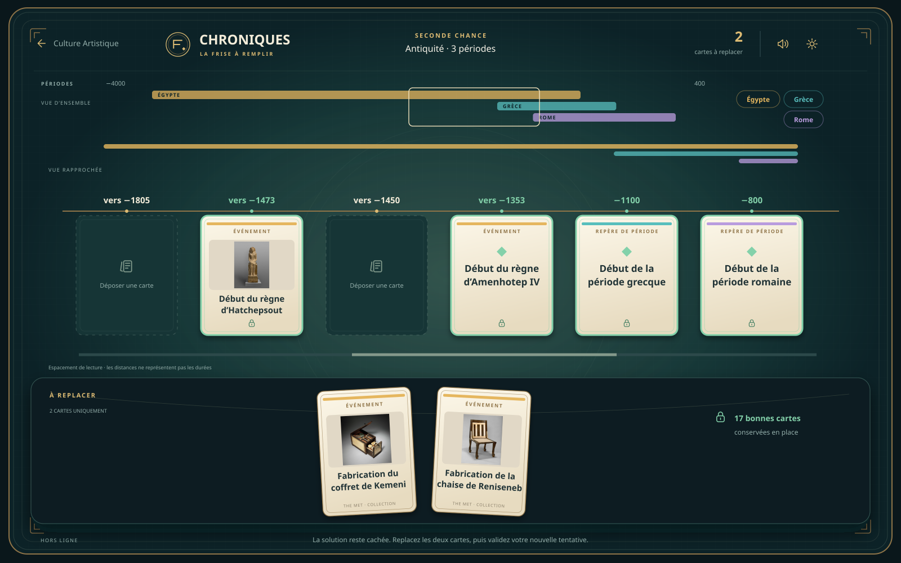

01 / 07
Télécharger le SVGChoix de la borne de début
TFT · Cinq cartes centrales, fond assombri et survol doré.

02 / 07
Télécharger le SVGChoix de la borne de fin
La seconde borne reprend le même rituel de sélection.

03 / 07
Télécharger le SVGLes repères de période
Validation immédiate, repère juste verrouillé, erreur rouge et événements en réserve.

04 / 07
Télécharger le SVGLe plateau et la main
Balatro + Hearthstone · Main de sept cartes, pioche et périodes colorées superposées.

05 / 07
Télécharger le SVGChoisir sa correction
Deux voies : voir les erreurs ou rejouer seulement les mauvaises cartes.

06 / 07
Télécharger le SVGVoir les erreurs
Correction automatique avec comparaison avant/après et cartes changées signalées.

07 / 07
Télécharger le SVGRefaire les mauvaises
Seulement les deux mauvaises cartes reviennent ; les bonnes réponses sont conservées.
